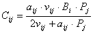
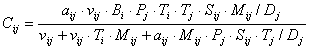
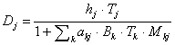
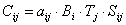

Ecosim bases the crucial assumption for prediction of consumption rates on a simple Lotka-Volterra or ‘mass action’ assumption, modified to consider ‘foraging arena’ properties. Following this, prey can be states that are or are not vulnerable to predation, for instance by hiding, (e.g., in crevices of coral reefs or inside a school) when not feeding, and only being subject to predation when having left their shelter to feed, (see

Eq. 51where, aij is the effective search rate for predator i feeding on a prey j, vij base vulnerability expressing the rate with which prey move between being vulnerable and not vulnerable, Bi prey biomass, Pj predator abundance (Nj for split pool groups discussed later, and Bj for other groups).
The model as implemented argues that ‘top-down vs. bottom-up’ control is in fact a continuum, where low v’s implies bottom-up and high v’s top-down control.
Early experience with Ecosim has led to a more elaborate expression to describe the consumption:

Eq. 52where, Ti represents prey relative feeding time, Tj predator relative feeding time, Sij user-defined seasonal or long term forcing effects, Mij mediation forcing effects, and Dj represents effects of handling time as a limit to consumption rate,

Eq. 53where hj is the predator handling time. The feeding time factors are discussed further
